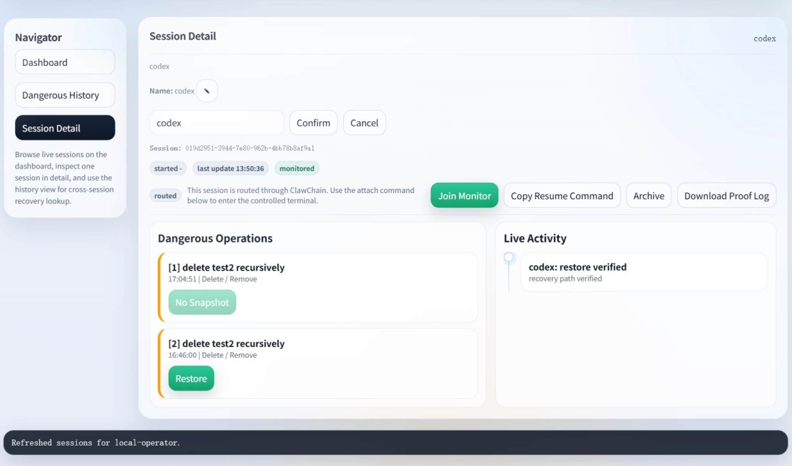
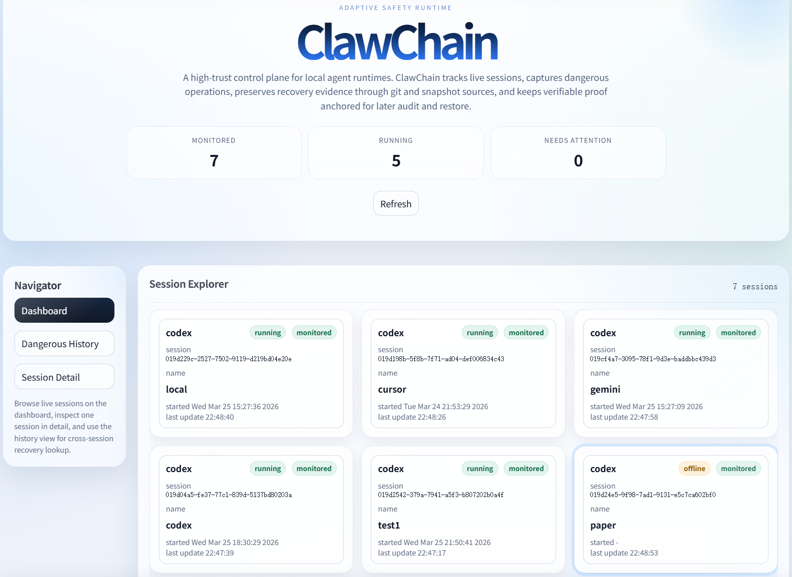

Target 01
Safety
Intervene before dangerous agent actions land unchecked.
ClawChain is built for high-privilege agents such as OpenClaw, where real command execution creates real operational risk. It addresses four persistent failures at once: opaque execution, fragile evidence, incomplete recovery after destructive actions, and poor post-incident traceability. The result is one runtime surface that is safe, recoverable, and fully traceable.
Managed resume, monitored delete capture, restore, proof export, and chain verification.
Real session detection, controlled relaunch, monitored restore flow, and verified proof output.
The generalized shell-agent interface is already prepared for the next adapter path.
Desktop-oriented session routing on the same control plane.
Headless runtime candidate for snapshot-first proof and recovery flows.
CLI-shaped adapter target aligned with the same monitored runtime surface.
Managed resume, monitored delete capture, restore, proof export, and chain verification.
Real session detection, controlled relaunch, monitored restore flow, and verified proof output.
The generalized shell-agent interface is already prepared for the next adapter path.
Desktop-oriented session routing on the same control plane.


Locate live, high-privilege agent sessions already active on the host.
Shift execution into the managed launcher path with controlled resume and handoff.
Detect dangerous actions early enough to preserve recovery material.
Recover the target from the vault and confirm the restored state.
Export proof and verify anchor fields against the configured backend.